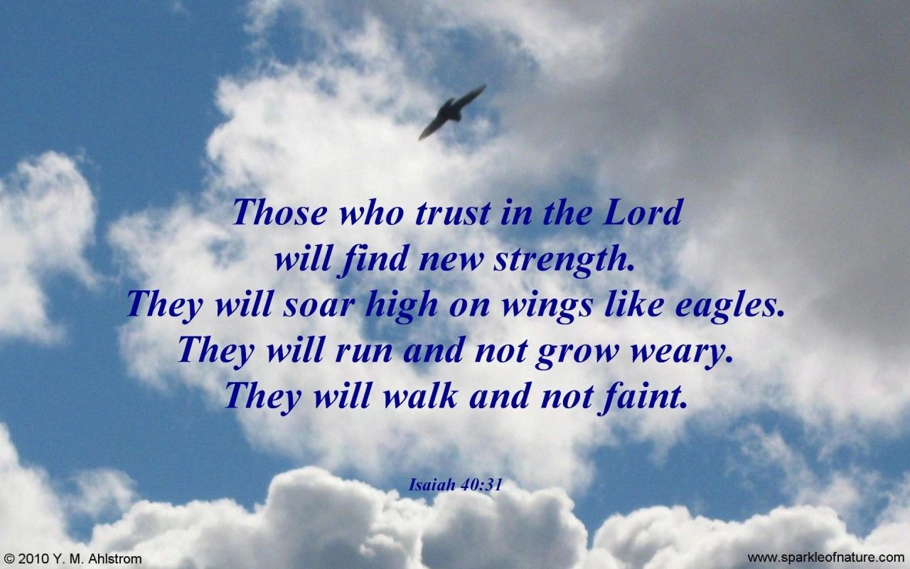

Weekly Update
"Keep watch over yourselves and all the flock of which the Holy Spirit has made you overseers. Be shepherds of the church of God, which he bought with his own blood."Acts 20:28
Traditions Explained
The Use of Candles
WHY WE USE CANDLES IN WORSHIP
In Christian tradition, light represents Christ. Jesus said, “I am the light of the world”. We light our candles at the start of worship service, symbolizing His presence with us.
We use two Candles: These represent the 2 natures of Jesus
- One candle symbolizes Jesus’ Humanity (His birth, His life among us, His suffering, and Him being with us in our everyday lives)
- The other candle symbolized Jesus’ Divinity (His holiness, His authority, His saving power, and His eternal nature)
Together, the two candles proclaim that Jesus is fully human and fully God!
WHY WE LIGHT AND EXTINGUISH THEM AT SPECIFIC TIMES
Lighting the candles at the beginning of the Worship service is a way of saying, “This time is set apart for God” and marks the beginning of our gathered worship
Extinguishing the candles at the end of the service is NOT a sign that Jesus leaves us. It simply marks the conclusion of the formal worship time. As the candles are extinguished, we keep a light lit and carry it down the aisle towards the door, reminding us that, as we leave, we carry Jesus’ light out into the world.
The candles remind us every week:
- Christ is present
- Christ is the center
- Christ is the light of the world
At the beginning of the service, as the candles are being lit, is a time to quiet ourselves with each other and before God, asking Him to prepare our hearts for worship.
Words to Encourage

Words of encouragement
I have said these things to you, that you may have peace in me. In the world you will have tribulation. But take heart; I have overcome the world. John 16:33